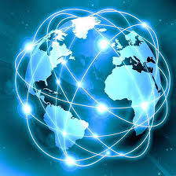

Bienvenue sur mon site !
Je suis Lucie ROUSSELLE
Je vais vous parler de ma passion pour le cours de SNT


Les chapitres de SNT:
Programmation python
Python est un language de programmation informatique généraliste.Contrairemant à HTML,CSS ou JavaScript, son usage n' est donc pas limité au développement web. Il peut être utilisé pour tout type de programmation et de développement logiciel.
Données structurées
Ces données structurées sont un format normalisé permettant de fournir des informations sur une page et de classer le contenu de cette page. Par exemple, sur une page de recette, il peut s'agir des ingrédients, du temps et de la température de cuisson, des calories, etc.
Réseaux sociaux
Le réseau social est une des catégories des médias sociaux. Tandis que ces derniers ont pour fondement le contenu, le réseau social a pour raison d’être la création de communautés et l’interaction entre les personnes. Le réseau social peut être défini comme une Communauté d'internautes reliés entre eux par des liens, amicaux ou professionnels, regroupés ou non par secteurs d'activité, qui favorise l'interaction sociale, la création et le partage d'informations.
Informatique embarqué et objets connectés
On désigne sous le terme informatique embarquée les aspects logiciels se trouvant à l'intérieur des équipements n'ayant pas une vocation purement informatique. L'ensemble logiciel, matériel intégré dans un équipement constitue un système embarqué.
Un objet connecté est un objet électronique capable de communiquer avec un autre objet (souvent un smartphone, une tablette ou un ordinateur). Cette communication permet à l'objet d'envoyer ou de recevoir des informations via une connexion Internet. On parle alors d'Internet des objets ou d'Internet of Things (IoT)
Photographie numérique
Dans un appareil photographique numérique, l'objectif est composé de plusieurs lentilles et focalise la lumière sur le capteur. Ce dernier, couplé à des filtres colorés, récupère sur chacun de ses photosites une information concernant une couleur.
Localisation
Tout point de la Terre est déterminé par des coordonnées géographiques : latitude, longitude et altitude.
La latitude d'un lieu correspond à l'angle formé par la parallèle passant par ce lieu avec l'équateur.
La longitude d'un lieu correspond à l'angle formé par le méridien passant par ce lieu avec le méridien de Greenwich (proche de Londres). La géolocalisation est la connaissance de la position sur Terre : elle permet d'avoir la latitude, la longitude et l'altitude.
Les systèmes américain GPS et européen Galiléo permettent la géolocalisation d'un récepteur à partir d'au moins quatre satellites.
Cartographie
La cartographie est la réalisation et l'étude des cartes géographiques et géologiques. Elle est très dépendante de la géodésie, science qui s'efforce de décrire, mesurer et rendre compte de la forme et des dimensions de la Terre.
Internet et Web
Quelle est la différence entre Internet et le Web, deux termes bien souvent confondus ? Internet est un réseau informatique mondial né à la fin des années 1970, permettant de relier des machines entre elles. Le Web, système aisé de consultation de pages de données, est arrivé plus tard, dans les années 1990
Pour en savoir plus vous pouvez consulter le programme de sciences numériques et technologie de seconde générale et technologique en cliquant ici